The moveEZ (pronounced move easy) R package provides tools for constructing animated Principal Component analysis (PCA) biplots that represent samples and variables simultaneously. These visualizations reveal how multivariate structures evolve across the ordered levels of a categorical variable. Built as an extension to the biplotEZ package, moveEZ offers three animation frameworks of increasing methodological complexity: a fixed variable frame, in which variable vectors remain constant and only sample positions are animated; and two dynamic frames, in which both sample positions and variable vectors are recomputed and animated at each level. The dynamic frames support Generalized Procrustes analysis (GPA) for alignment and reflection to ensure visual continuity across levels, and are compatible with high-dimensional datasets including grouped structures. The package integrates with gganimate to produce high-quality animations suitable for publications and presentations, and supports both animated and static faceted displays via a single argument. Although originally motivated by tracking shifts in African climate indicators, moveEZ is domain-agnostic and applicable wherever multivariate measurements are recorded repeatedly across an ordered categorical variable, including economic, ecological, and biological settings.
The moveEZ R package provides tools for constructing and animating Principal Component Analysis (PCA) biplots for multivariate data observed across the levels of an ordered variable. PCA biplots, constructed using the companion package biplotEZ (Lubbe et al. 2024), provide a joint low-dimensional representation of observations and variables. When multivariate data are observed sequentially, however, examining a separate biplot at each level makes gradual changes in observations and variables difficult to follow. moveEZ addresses this problem by displaying transitions between successive biplots, allowing changes in multivariate structure to be viewed as a visually continuous sequence across the observed levels. Although originally motivated by the study of climate conditions over time, the package is domain-agnostic and can be applied whenever multivariate measurements are indexed by a meaningful ordering, such as time, experimental stage, algorithmic iteration, or another ordered sequence.
Animation itself has a long history in multivariate statistical graphics. The grand tour (Asimov 1985) displays a smooth sequence of low-dimensional projections of a multivariate dataset, and the tourr package (Wickham et al. 2011) provides an implementation of tour methods in R. Several packages extend this framework. spinifex (Spyrison and Cook 2020) provides manual tours in which the analyst controls changes in the contribution of variables to the projection, while langevitour (Harrison 2023) and detourr (Hart and Wang 2023) provide browser-based implementations supporting smooth and interactive projection tours. Lee et al. (2022) provide a broader review of tour methods. These methods primarily address the exploration of a fixed multivariate dataset through a changing projection basis. The quantity indexing the animation is therefore the projection itself rather than an observed variable in the data.
moveEZ addresses a different problem: how does a multivariate configuration change across the levels of an observed ordered variable? Here the data change from one level to the next while the type of representation remains fixed. The two approaches are therefore complementary. A tour explores alternative low-dimensional projections of a dataset and may reveal structure that is not visible in the PCA plane; moveEZ, by contrast, displays how PCA-based representations change across ordered subsets of the data. Section Relation to tour methods discusses these conceptual differences and their implications in more detail.
An additional difficulty arises because PCA biplots fitted independently at successive levels cannot necessarily be compared directly. Their orientations are arbitrary, so two geometrically equivalent configurations may differ by a rotation or reflection. Simply concatenating independently fitted biplots into an animation can therefore introduce apparent movement that reflects orientation indeterminacy rather than change in the underlying multivariate structure. moveEZ addresses this problem by aligning independently fitted configurations before displaying their evolution.
The closest earlier work is the dynamic biplot of Egido and Galindo (2015), available through the graphical interface of dynBiplotGUI (Egido 2020). It fits an HJ-biplot to one reference occasion of a three-way dataset and projects the other occasions onto it, which gives static trajectories in one fixed biplot. It does not refit the biplot at each level, align independently fitted biplots, or animate them. The contribution of moveEZ lies in integrating these steps within a single R workflow. In particular, combines independently fitted PCA biplots across an ordered variable with generalized Procrustes alignment to either a consensus configuration or a user-supplied target. The package also provides quantitative measures describing the agreement or deviation of each aligned configuration relative to its target and generates both animated sequences and corresponding static faceted displays through a common ggplot2-based interface.
Animated bubble charts of the gapminder data brought temporal animation in statistical graphics to a broad audience. Motion is a perceptually noticeable display dimension and can produce strong perceptual grouping: elements with similar motion tend to be perceived as belonging together (Bartram and Ware 2002; Ware 2013). Smooth transitions between states of a statistical graphic can also help viewers maintain correspondence between graphical elements and perceive changes more effectively than abrupt transitions (Heer and Robertson 2007).
The empirical evidence nevertheless shows that these benefits are conditional. Tversky et al. (2002) reviewed studies comparing animated and static graphics and found that many reported advantages of animation disappeared when the displays carried equivalent information. They noted that animations are transient and may be too fast or too complex to perceive accurately. They proposed that effective animations should be readily apprehended (the apprehension principle) and that visible changes should correspond to changes in the underlying content (the congruence principle). Robertson et al. (2008) compared animation, traces, and small multiples for trend data similar to gapminder. Animation was engaging and performed well in some presentation tasks, but also produced more errors; for analysis tasks, the static alternatives were generally faster, with small multiples providing greater accuracy. Related comparisons in other dynamic visualization settings similarly show that the relative effectiveness of animation and static alternatives depends on the task (Archambault et al. 2011; Brehmer et al. 2020).
These findings are consistent with known limits of visual attention. Observers can accurately track only a small number of independently moving targets, typically about four or five under standard multiple-object-tracking conditions (Pylyshyn and Storm 1988), while changes occurring outside the focus of attention are frequently missed (Rensink 2002). These limitations are relevant to animated biplots, in which many observations and several variable vectors may move simultaneously. Furthermore, frames interpolated between successive observed levels are graphical transitions and should not be interpreted as additional observed data.
The design of moveEZ responds to these limitations in several ways. First, animation and small multiples are treated as complementary: the plotting functions can produce static faceted displays of the same biplots with move = FALSE, allowing animation to provide an overview while facets support detailed comparison. Second, when individual observations are displayed, the shadow argument retains traces of earlier positions, following the same general principle as trajectory-based displays that make temporal paths simultaneously visible (Robertson et al. 2008). Third, for grouped data, convex hulls and directed variable vectors provide higher-level visual summaries, reducing the need to interpret the display solely by tracking individual observations. Fourth, the animation pauses at each observed level, providing additional time to apprehend each configuration, while the Procrustes alignment used by moveplot3() removes arbitrary differences in orientation before the configurations are animated. These choices are consistent with the apprehension and congruence principles of Tversky et al. (2002). Finally, the evaluation() function provides quantitative measures of the agreement or deviation of individual configurations relative to the alignment target, supplementing visual interpretation.
We have not conducted a user study specifically evaluating animated biplots. The design rationale for moveEZ is therefore informed by the broader literature on animation, visual perception, and dynamic statistical graphics rather than by direct experimental evidence for the package itself. A formal evaluation comparing animated and static representations of evolving biplots remains an important direction for future work.
The aim is to approximate a high-dimensional multivariate dataset in two dimensions for visualization. Consider a dataset \({\bf{X}}\) comprising \(n\) observations and \(p\) continuous variables, along with an additional categorical variable referred to throughout this paper as the time variable whose ordered levels define the sequential structure in the data. This variable does not need to correspond to chronological time; it may represent any ordered index such as experimental stages, algorithmic iterations, or measurement occasions. Each distinct level of the time variable partitions \({\bf{X}}\) into a time slice: the subset of rows corresponding to that level. The collection of time slices across all levels constitutes the full sequential dataset that moveEZ animates.
Where appropriate, standardization (centering and scaling) is applied prior to dimension reduction. Singular value decomposition (SVD) of \({\bf{X}}\) yields: \[{\bf{X=UDV'}}.\] A standard PCA biplot represents samples in principal coordinates, taken from the first two columns of \({\bf{UD}}\), and variables in standard coordinates, taken from the first two columns of \({\bf{V}}\) (Greenacre et al. (2022)).
Variables in a PCA biplot can be represented either as directed vectors, as introduced by (Gabriel (1971)), or as calibrated axes, which support interpolation and prediction of sample values (Blasius et al. (2009), Gower and Hand (1996), Gower et al. (2011)). Since moveEZ produces dynamic visualizations across multiple time points, directed vectors are preferred over calibrated axes. They produce a less cluttered display, which eases visual tracking of subtle changes in both samples and variables as the animation progresses.
moveEZ animates PCA biplots across the levels of an ordered variable, the time variable, by interpolating between successive biplot states using a linear easing function, ease_aes() from the tweenr package (Pedersen (2024)), applied via the transition_states() function in the package gganimate (Pedersen and Robinson (2025)). Linear easing produces transitions at a constant rate, ensuring smooth and visually interpretable movement between states. A brief pause at each state allows the user to clearly identify the biplot corresponding to each time level before the animation continues.
The package provides three functions: moveplot(), moveplot2(), and moveplot3(), each implementing a different conceptual approach to animating the biplot across time. The key distinction between them concerns whether the PCA solution is computed once on the full dataset or separately for each time slice, and consequently whether the variable vectors remain fixed or evolve over time. All three functions share a move argument that toggles between a dynamic animation (move = TRUE) and a static faceted display (move = FALSE), the latter being useful for figures in publications or detailed comparison across time points. Table
1 summarizes the key differences between the three functions to assist users in selecting the most appropriate approach for their data and research question.
| Feature | moveplot() | moveplot2() | moveplot3() |
|---|---|---|---|
| PCA computed | Once, on full dataset | Per time slice | Per time slice |
| Variable vectors | Fixed | Dynamic | Dynamic |
| Sample coordinates | Dynamic | Dynamic | Dynamic |
| Alignment | Not required | Manual (align.time, reflect) | Automated (GPA) |
| Min. observations per time slice | One | Multiple | Multiple |
| Balance across time slices | Not required | Not required | Required |
| Best suited for | Stable variance structure; single observations per group per time | Evolving variance structure; manual alignment feasible | Evolving variance structure; many time slices |
Table 1 shows that there is a trade-off between simplicity and advanced methodological choices which is guided by the data. moveplot() assumes that the principal components computed on the full dataset provide a meaningful basis for projecting each time slice. This is appropriate when the underlying variance–covariance structure is stable across time. When this assumption does not hold, that is, when the directional relationships among variables themselves evolve then moveplot2() or moveplot3() are more appropriate, as they compute a separate PCA solution for each time slice. The distinction between these two is one of practicality: moveplot2() requires the user to manually identify and correct orientation discontinuities between frames, while moveplot3() automates this process using Generalized Procrustes analysis (GPA), making it the preferred choice when the number of time levels is large or when discontinuities are difficult to detect visually.
In all three functions, the core biplot construction is handled by biplotEZ (Lubbe et al. (2024)), and the resulting object is passed directly to the relevant moveplot function via the pipe operator.
In a tour, the data \({\bf{X}}\) stay fixed and frame \(k\) shows \({\bf{XA}}_k\), where \({\bf{A}}_k\) is an orthonormal basis. The frames between two bases are found by geodesic interpolation (Buja et al. 2005), so each frame is a true linear projection of the data. The axes in a tour display are the rows of \({\bf{A}}_k\), so each tour frame is a biplot of the same data. Table 2 compares a tour with the three functions in moveEZ.
| Method | Data | Basis | Meaning of movement |
|---|---|---|---|
| Tour | Fixed | Changes | A different view of the same data |
| moveplot() | Changes with time level | Fixed | Time slices move in one common space |
| moveplot2(), moveplot3() | Changes with time level | Changes with time level | Data and basis change together |
In moveplot(), the basis \({\bf{V}}\) is fixed and the data change: the frame for time level \(t\) shows \({\bf{X}}_t{\bf{V}}\), where \({\bf{X}}_t\) is the time slice. This is the reverse of a tour. Distances are comparable between frames, and movement shows a change in the location or spread of a time slice.
In moveplot2() and moveplot3(), the frame for time level \(t\) shows \({\bf{X}}_t{\bf{V}}_t\). This has four implications for statistical interpretation. First, the components of different time slices are different linear combinations of the variables. The movement of a sample point thus mixes a change in the data with a change in the basis, and the variable vectors must be read together with the sample points. Second,each time slice is centred and scaled separately, so differences in mean and variance between time slices are removed. These functions show change in correlation structure. Users who want to see shifts in level must use moveplot(). Third, when the second and third eigenvalues of a time slice are near, the PCA plane is not stable, and a large visual change can come from sampling variation. GPA removes rotation and reflection in the plane, but it cannot remove this effect. The evaluation() measures help to identify such time slices. Fourth, the frames between two time levels are linear interpolations of coordinates. They are not projections of data, which is different from a tour.
JNS to comment on the scaling in GPA [R5-12].
In the fixed variable frame, a single PCA solution is performed on the full dataset \({\bf{X}}\), yielding one set of sample scores, \({\bf{Z}}\), represented by plotted coordinates, and one set of variable loadings, \({\bf{V}}\), as vectors. The variable vectors remain constant throughout the animation, providing a stable reference frame for interpretation. The sample scores are then sliced according to the levels of the time variable and animated sequentially, highlighting how observations move relative to a fixed coordinate system defined by the overall variance structure of the data. This framework is illustrated in Figure 1.
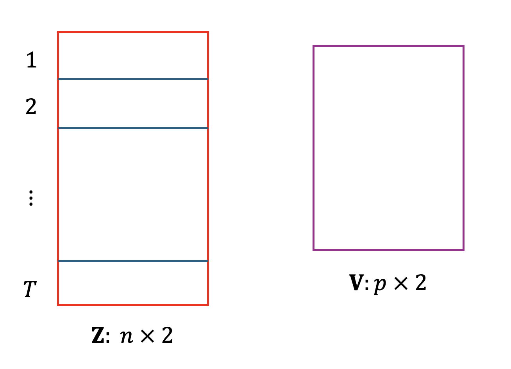
Figure 1: The fixed variable framework where the sample coordinates in matrix \({\bf{Z}}\) are sliced according to the levels of the time variable \(T\) and the variable vectors in matrix \({\bf{V}}\) remaining fixed.
This approach is most appropriate when the underlying variance–covariance structure can be assumed stable across time, and is the only viable option when there is a single observation per group per time level, since a per-slice PCA solution would not be feasible in that setting.
To illustrate moveplot() with a single observation per group per time level, we use the gapminder dataset available in the gapminder package (Bryan (2025)), which contains continent-level statistics on life expectancy (lifeExp), population size (pop), and GDP per capita measured every five years from 1952 to 2007 (gdpPercap). For simplicity, the data are aggregated by continent and year, yielding one observation per continent per year:
A PCA biplot is first constructed using biplotEZ, with continent as the grouping aesthetic and year as the sample label. Because the three continuous variables are on vastly different scales, standardization is applied:
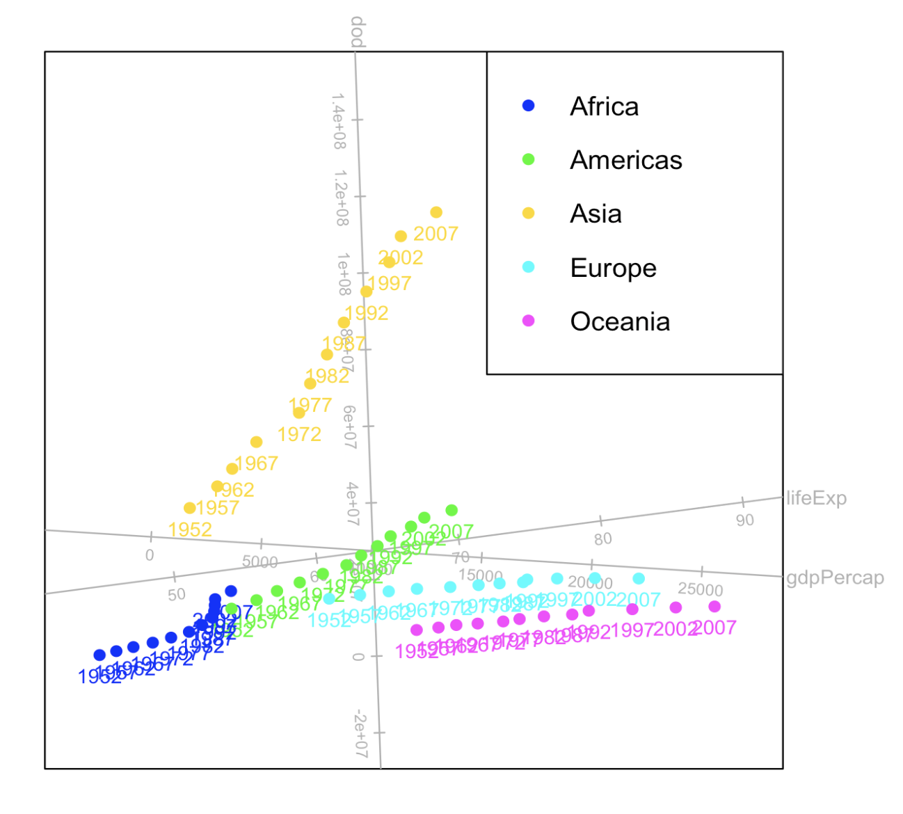
Figure 2: PCA biplot of the gapminder data colored by continent and labeled by year.
The resulting static biplot, shown in Figure 2, reflects the overall variance structure across all time points. This biplot object is then passed to moveplot():
bp |> moveplot(
time.var = "year",
group.var = "continent",
hulls = FALSE,
shadow = TRUE,
scale.var = 3,
move = TRUE)The key arguments controlling the visual output of moveplot() are as follows. The hulls argument governs whether groups are represented by convex hulls (hulls = TRUE, the default) or individual sample points (hulls = FALSE). Convex hulls are preferable when each group contains many observations and the interest lies in tracking group-level movement, as they provide a compact summary of regional spread at each time point. Individual points are more appropriate when sample-level trajectories are of interest, or when group sizes are small. The shadow argument, available only when hulls = FALSE, retains faded traces of previous sample positions in the animation, leaving visible trails that convey the direction and relative speed of movement across time. The scale.var argument applies a numeric multiplier to the variable vectors, which can improve interpretability when default vector lengths are too short to convey meaningful directionality.
The animation (or facet) is shown in Figure 3 where the variable vectors remain fixed at their global positions while the continent points evolve across time, allowing the viewer to track how each continent moves relative to the directions of life expectancy, population, and GDP per capita. For instance, Asia and Africa show clear movement in the direction of increasing life expectancy and GDP over the decades, while population contributes less discriminatory information in the PCA space due to its large variance relative to the other variables. This is confirmed by the vector orientation of the variables.
It is worth noting that this is a deliberately simple example chosen to illustrate the mechanics of moveplot(). The broad trends visible in the animation, such as improvements in life expectancy and GDP for most continents, are also discernible in the static biplot of Figure 2, since the principal components are computed globally. The animation becomes more valuable in complex or less intuitive datasets, where temporal progression is difficult to perceive from a single static plot.
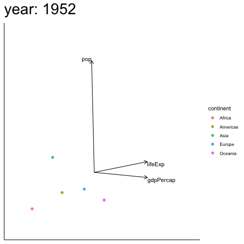
Figure 3: An animation (or facet) of the PCA biplot of the gapminder data using the function moveplot() under the fixed variable framework.
To illustrate moveplot() with multiple observations per group per time level, we use the Africa_climate dataset included in moveEZ. This dataset contains climate measurements for ten African regions derived from the ERA5 reanalysis (Hersbach et al. (2023)), with IPCC-defined reference regions (Iturbide et al. (2020)) used as the grouping variable. The dataset contains six continuous variables, described in Table 3 alongside the abbreviations used in all biplot displays.
| Variable | Abbreviation | Unit | Description |
|---|---|---|---|
| Accumulated Precipitation | AP | m/day | Total daily precipitation accumulated over the region |
| Daily Evaporation | DE | m/day | Net daily evaporation from the surface |
| Temperature | Temp | °C | Mean daily surface temperature |
| Soil Moisture | SM | m³/m³ | Volumetric water content of the upper soil layer |
| Standardised Precipitation Index (6-month) | SPI6 | Dimensionless | Standardised index of precipitation anomaly over a 6-month window |
| Wind Speed | Wind | m/s | Mean daily wind speed at 10m above surface |
Unlike the gapminder example, each combination of region and time level contains many observations, allowing convex hulls to summarize regional spread at each time point.
A PCA biplot is first constructed on the full dataset shown in Figure 4.
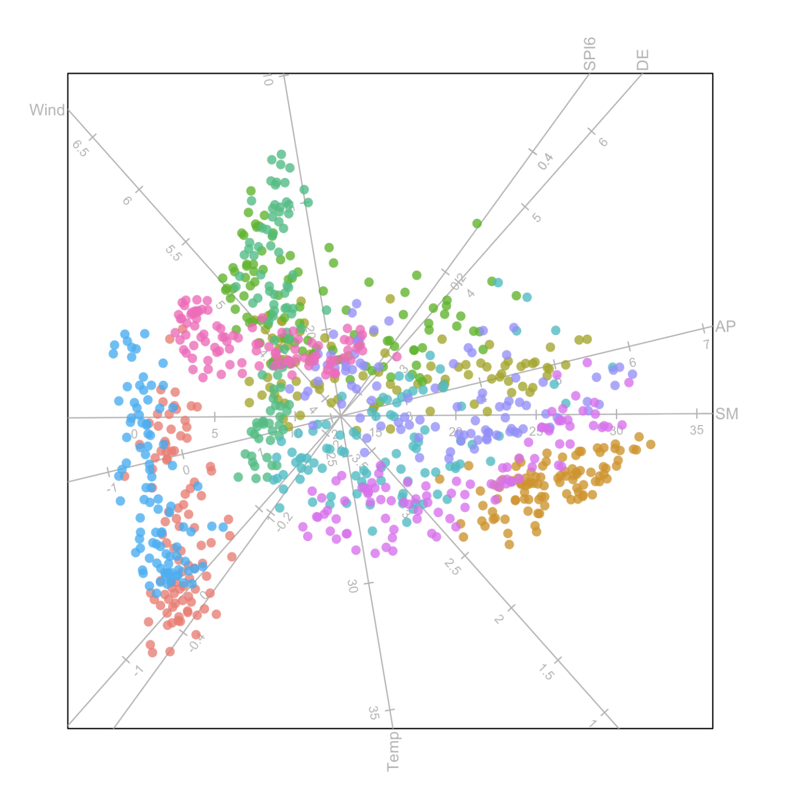
Figure 4: PCA biplot of the climate data colored by region.
From the biplot in Figure 4, the relationships between the variables are exposed, but there is some difficulty to separate the regions without intervention. Importantly, information on the time differences are not available which means a sequential exploration is impossible. These aspects are addressed in moveEZ.
Setting move = FALSE produces a faceted display, shown in Figure 5, where convex hulls summarize each region at each time point:
bp |> moveplot(time.var = "Year", group.var = "Region",
hulls = TRUE, move = FALSE)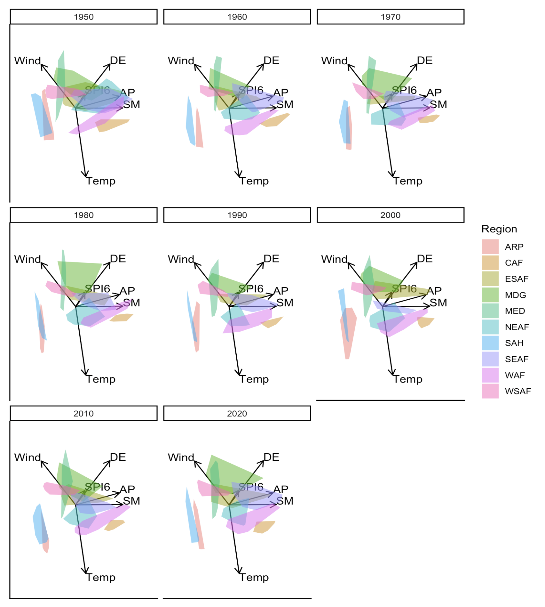
Figure 5: Faceted PCA biplots of the climate data, with each panel representing a distinct time frame, generated using moveplot().
Setting move = TRUE produces the animated equivalent, where the convex hulls evolve continuously across time, highlighting regional climate dynamics in a single integrated display:
bp |> moveplot(time.var = "Year", group.var = "Region",
hulls = TRUE, move = TRUE)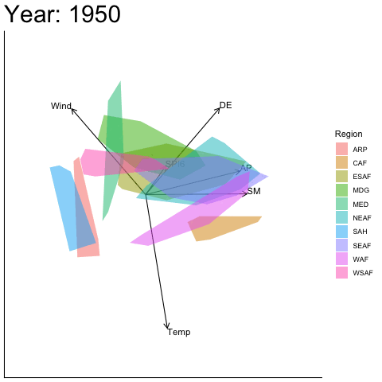
Figure 6: An animation of the PCA biplot of the climate data using the function moveplot() under the fixed variable framework.
Note that when fewer than three observations exist for a particular group and time level, sample points are plotted automatically in place of convex hulls, even when hulls = TRUE is specified.
moveplot2() extends the animation to both sample coordinates and variable vectors by computing a separate PCA solution for each time slice of the data. Unlike moveplot(), which projects all time slices onto a fixed coordinate system defined by the full dataset, moveplot2() produces a separate pair of sample scores \({\bf{Z}}_t \, ; {\bf{V}}_t\) for \(t = 1, 2, \ldots, T\) as shown in Figure 7. Both sets of coordinates are then interpolated across time to form a continuous animation. This approach provides a more faithful depiction of time-varying variance–covariance structures and is particularly appropriate when the directional relationships among variables cannot be assumed stable across time.
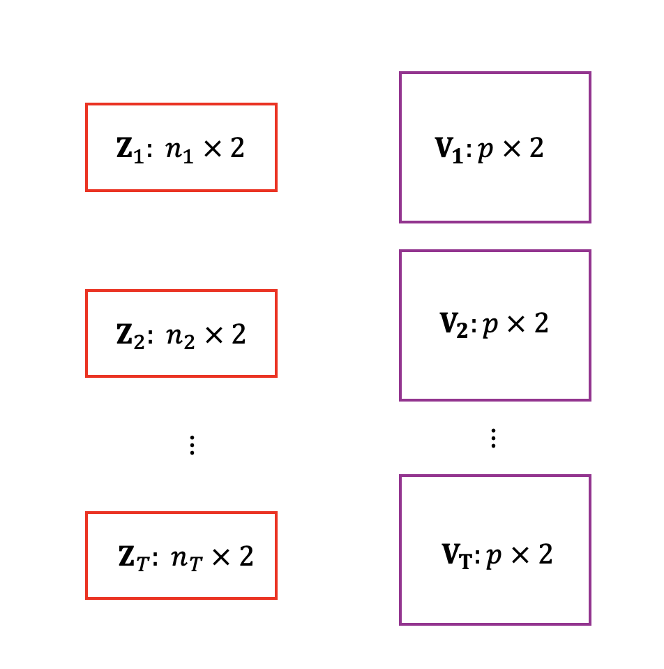
Figure 7: The dynamic variable framework where separate matrices \({\bf{Z}}\) and \({\bf{V}}\) are computed for each level of the time variable \(T\).
Because moveplot2() fits a separate PCA per time slice, it requires a sufficient number of observations within each slice to perform the decomposition. It is therefore not suitable for datasets with a single observation per group per time level, such as the aggregated gapminder data used in the previous section. The Africa_climate dataset, which contains multiple observations per region and time level, is used to demonstrate this function throughout this section.
bp |> moveplot2(time.var = "Year", group.var = "Region",
hulls = TRUE, move = FALSE)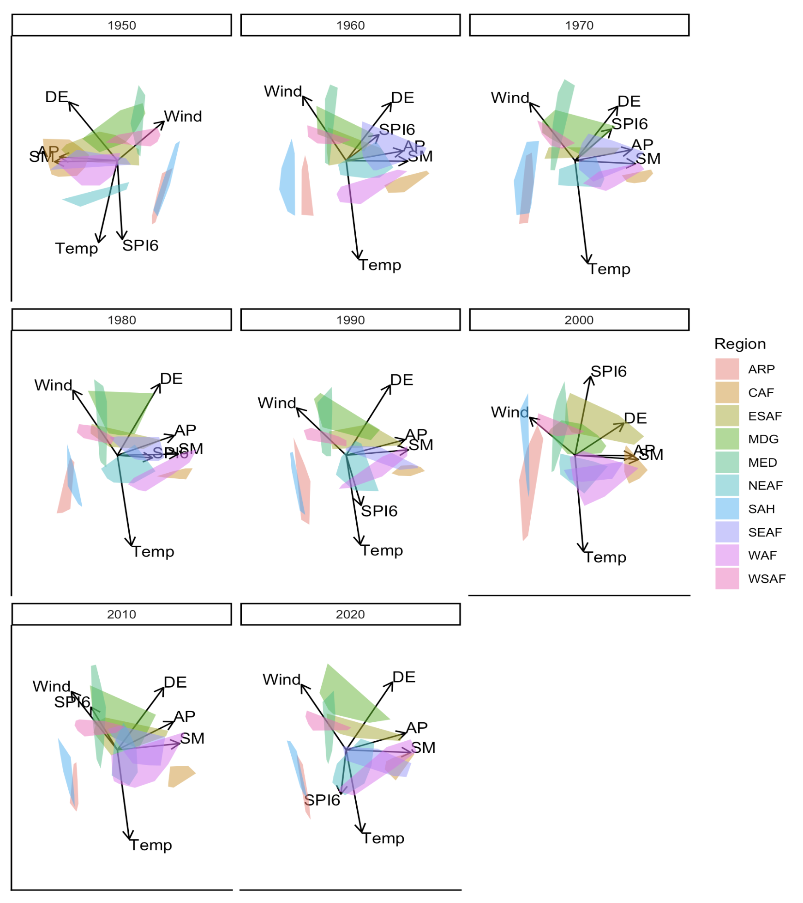
Figure 8: Faceted PCA biplots of the climate data using moveplot2().
A consequence of computing separate PCA solutions per time slice is that the orientation of the resulting biplots is not uniquely defined. Eigenvectors are determined only up to a sign change, meaning that the same underlying covariance structure can be represented by configurations that are reflections of one another. This is mathematically inconsequential but visually disruptive: when the sign of an eigenvector flips between consecutive time slices, the variable vectors and sample positions may appear to suddenly mirror or reverse direction in the animation, creating a discontinuity that does not reflect any genuine change in the data.
This behavior can be seen in Figure 8, where a noticeable shift in orientation occurs between the biplots for 1950 and 1960, the variable vectors and sample configuration are reflected about the x-axis producing a visual jump in the animation. To correct for this, moveplot2() provides two optional arguments:
align.time: a vector of time points at which alignment should be applied, ensuring that the orientation of principal components remains consistent across the specified slices.reflect: detects and corrects sign inversions of the loadings between frames. Available options are "x" (reflect about the x-axis), "y" (reflect about the y-axis), and "xy" (reflect about both axes).Applying these corrections to the 1950 slice will produce the aligned output.
While effective, this approach requires manual inspection to identify which time points need correction and how they should be reflected. For datasets with many time levels, this quickly becomes impractical, motivating the automated alignment strategy implemented in moveplot3(), described in the following section.
The manual alignment approach provided by moveplot2() works well when the number of time levels is small and orientation discontinuities can be identified by visual inspection. However, as the number of time slices grows, determining the correct combination of align.time and reflect arguments becomes increasingly difficult and subjective. moveplot3() addresses this by automating the alignment of sequential biplots using GPA.
Through GPA, multiple biplots are aligned by iteratively applying translation, reflection, rotation and scaling until the squared sum of squares distances between a set target biplot and the aligned biplots are minimized (Gower and Dijksterhuis (2004)). These transformations are mathematically inconsequential (i.e. admissible) and preserves the distances between the coordinates. The GPAbin package is used to perform GPA (Nienkemper-Swanepoel (2025)). The target biplot typically represents the average of the coordinates of the biplots over the various time levels, which is represented by the additional argument target = NULL. However, it might be sensible for the specific application to compare the biplots to an additional time point which contains the same measurements, but for a different year. The example dataset in moveEZ for this purpose, is Africa_climate_target, which represents measurements on the same variables as Africa_climate, but for the year 1989.
To compare each time slice in Africa_climate against the 1989 reference measurements, the target dataset Africa_climate_target is first prepared:
bp_1989 |> moveplot(time.var = "Target",
group.var = "Region", hulls = TRUE, move = FALSE)The resulting target biplot is used to align each time slice in Africa_climate using GPA:
bp |> moveplot3(time.var = "Year", group.var = "Region",
hulls = TRUE, move = FALSE,
target = Africa_climate_target)The faceted output will show each year’s biplot aligned to the 1989 reference, exposing the structural differences between 1989 and each decade from 1950 to 2020.
When no external reference is available or appropriate, setting target = NULL aligns all time slices to their average configuration as shown in Figure 9.
bp |> moveplot3(time.var = "Year", group.var = "Region",
hulls = TRUE, move = FALSE,
target = NULL)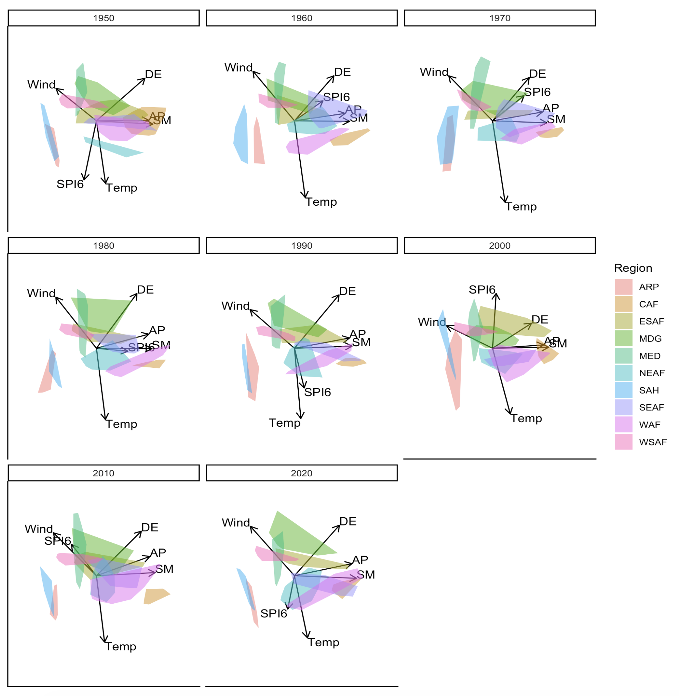
Figure 9: Faceted PCA biplots of the climate data using moveplot3() where no target is specified.
Compared to the unaligned output of moveplot2() in Figure 8, the biplots are now consistently oriented across time, making it substantially easier to track genuine structural change rather than artifactual reorientation.
The next section will address the evaluation function in the package that assists in understanding the magnitude of the changes between biplots that are observed when applying moveplot3().
The animated biplots produced by moveplot3() reveal how the multivariate structure of a dataset shifts relative to a target configuration across time. While these visual changes are informative, it is useful to quantify their magnitude, both to support objective interpretation and to identify time points that deviate most strongly from the target. The evaluation function in moveEZ provides this by computing five measures of comparison between each individual biplot and the target configuration specified in moveplot3(), based on orthogonal Procrustes analysis between the two configurations. For a detailed treatment of these measures, refer to Nienkemper-Swanepoel et al. (2023).
The five measures fall into two categories. The fit measures assess the overall similarity between configurations:
The bias measures quantify the directional and magnitude discrepancy between configurations:
Similarity between the target biplot and each biplot is reflected by small PS values (close to zero), large CC values (close to one) and low bias values (AMB, MB, RMSB) relative to others. These measures express the magnitude of changes that has to be made for a particular biplot to match the target visualization. Therefore, they measure how close the coordinates of the two configurations are.
The evaluation results are stored in the object returned by moveplot3() and can be extracted as follows:
results <- bp |>
moveplot3(time.var = "Year", group.var = "Region", hulls = TRUE,
move = FALSE, target = NULL) |>
evaluation()
results$eval.tabTable 4 shows the measures for the first two comparisons, the target (1989) against 1950 and 1960, respectively. The higher PS and lower CC value for 1950 relative to 1960 indicates that the multivariate structure of 1950 is more dissimilar to the 1989 reference than that of 1960, which is consistent with the greater temporal distance between these years.
| PS | CC | AMB | MB | RMSB | |
|---|---|---|---|---|---|
| Target vs. 1950 | 0.132 | 0.970 | 1.272 | 0 | 1.851 |
| Target vs. 1960 | 0.098 | 0.976 | 0.441 | 0 | 0.578 |
When the number of time levels is large, inspecting a table of measures becomes unwieldy. moveEZ therefore provides separate line plots for the fit and bias measures, which make temporal trends and anomalies immediately visible:
results$fit.plot
results$bias.plot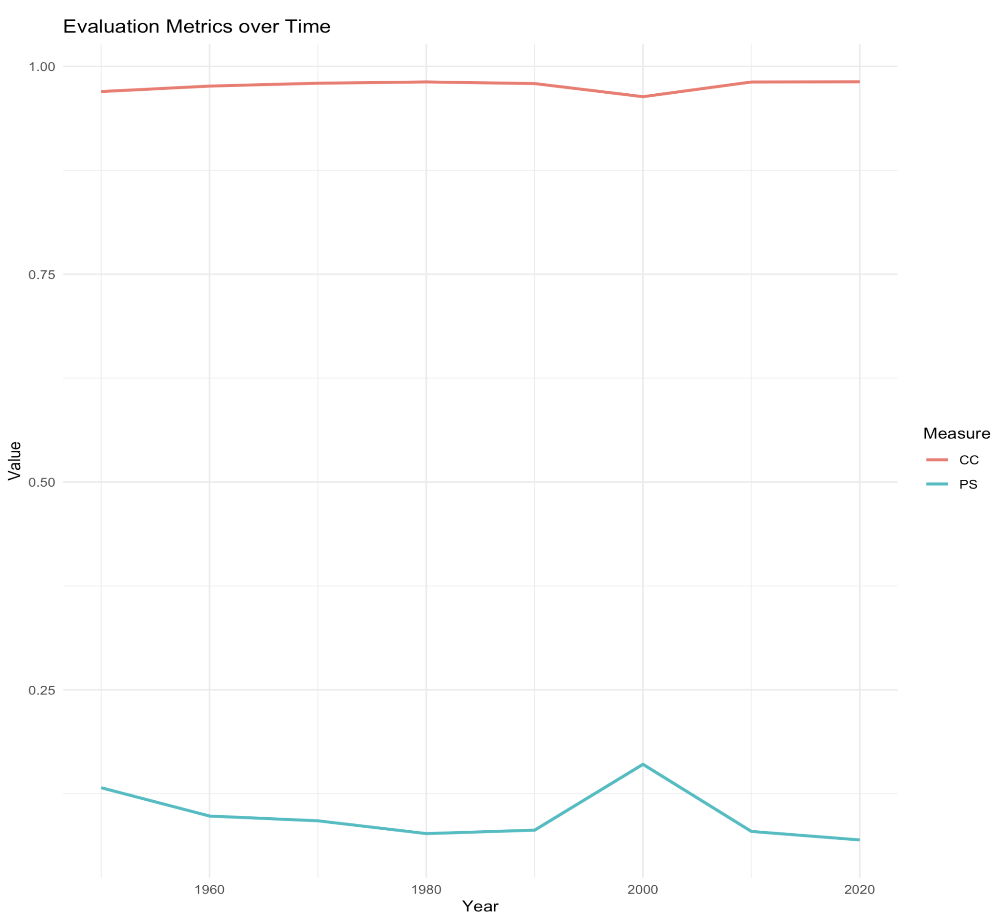
Figure 10: Fit measures using Procrustes Statistic (PS) and Congruence Coefficient (CC) for each time slice.
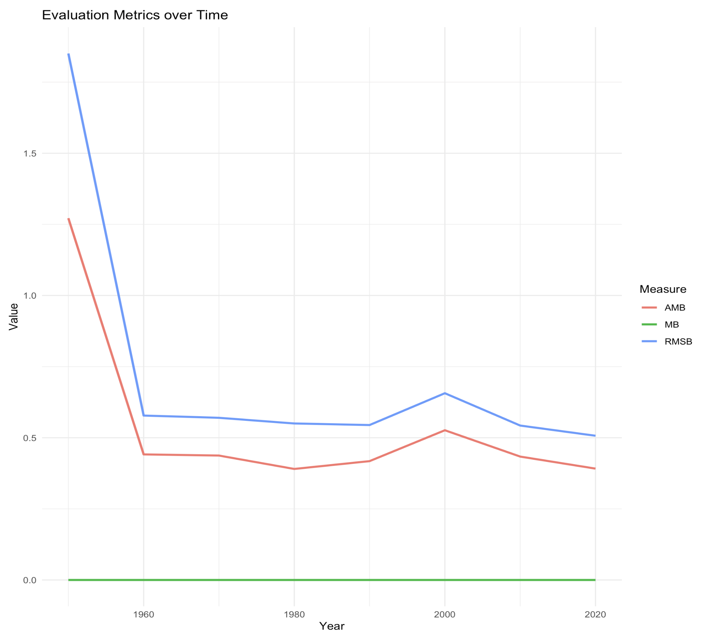
Figure 11: Bias measures using Absolute Mean Bias (AMB), Mean Bias (MB) and the Root Mean Squared Bias (RMSB) for each time slice.
The fit measures in Figure 10 reveal that the biplot of 2000 results in a lower CC and larger PS value compared to the other years. This means that there is a noticeable difference between the year 2000 and the average across years and the measurements of 2000 should be investigated in more detail to understand the cause of this difference.
The bias measures in Figure 11 shows that the initial bias is high, but decreases and stabilizes from 1960 with an increase in both the AMB and RMSB occurring for 2000. This is in agreement with the fit measures. The MB stays constant and close to zero for all comparisons.
The moveEZ package addresses a gap in the existing R ecosystem by extending PCA biplot methodology to longitudinal and sequentially structured multivariate data. Without such tools, analysts working with such data usually construct separate static biplots per time point, or static trajectories in one fixed biplot. These approaches make gradual change in both samples and variables difficult to perceive. By animating transitions between time points and providing tools to quantify the magnitude of those changes, moveEZ enables a more continuous and interpretable view of how multivariate structure evolves over time.
The three moveplot functions offer a coherent progression of methodological complexity. moveplot() provides an accessible entry point for datasets where the variance–covariance structure is stable across time or where only a single observation per group per time level is available. moveplot2() relaxes the assumption of a fixed coordinate system by computing a separate PCA solution for each time slice, at the cost of requiring manual correction of orientation discontinuities. moveplot3() automates this correction using GPA, making it the most robust option for datasets with many time levels or complex orientation behavior. The evaluation function complements all three by providing quantitative measures of structural similarity between time slices and a target configuration, supporting objective interpretation alongside the visual output.
Future development of moveEZ will focus on extending animation support to the full range of biplot types available in biplotEZ, beginning with canonical variate analysis and multiple correspondence analysis biplots, which share the most structural similarity with PCA biplots and are widely used in the applied sciences. A second avenue is the incorporation of non-linear easing functions, which would allow the speed of transitions between time states to reflect the magnitude of structural change rather than assuming a constant rate. Finally, the development of interactive controls such as a time slider, the ability to isolate individual group trajectories, or on-demand display of evaluation metrics alongside the animation would substantially enhance the utility of moveEZ for exploratory data analysis in applied settings.
moveEZ is available on CRAN and its development version is maintained on GitHub. Supplementary examples, including additional demonstrations of the animation frameworks and aesthetic customization, are provided in the accompanying package vignette.
We are grateful for the insights and contributions of Dianne Cook during the initial design phase of this package. Thank you for the financial support from the National Graduate Academy for Mathematical and Statistical Sciences (NGA(MaSS)).
moveEZ, biplotEZ, tourr, spinifex, langevitour, detourr, dynBiplotGUI, ggplot2, tweenr, gganimate, gapminder, GPAbin
ChemPhys, DynamicVisualizations, NetworkAnalysis, Phylogenetics, Spatial, TeachingStatistics
Text and figures are licensed under Creative Commons Attribution CC BY 4.0. The figures that have been reused from other sources don't fall under this license and can be recognized by a note in their caption: "Figure from ...".
For attribution, please cite this work as
Ganey & Nienkemper-Swanepoel, "moveEZ: An R Package for Animated Biplots", The R Journal, 2026
BibTeX citation
@article{moveEZ,
author = {Ganey, Raeesa and Nienkemper-Swanepoel, Johané},
title = {moveEZ: An R Package for Animated Biplots},
journal = {The R Journal},
year = {2026},
issn = {2073-4859},
pages = {1}
}